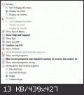

| Classic Shell http://www.classicshell.net/forum/ |
|
| Trouble with Logoff button, RDP and Windows 7 style http://www.classicshell.net/forum/viewtopic.php?f=7&t=113 |
Page 1 of 1 |
| Author: | Ted [ Sun Jan 20, 2013 12:22 pm ] |
| Post subject: | Trouble with Logoff button, RDP and Windows 7 style |
Hi there. I have a problem with the Classic Start Menu V3.6.5 on a Windows Server 2008 R2 to which I connect via remote desktop. In with the Start Menu Style "Windows Classic" everything is fine (and also in the original Microsoft Start Menu of Windows 2008): I have a logoff button and also the option to disconnect. But if I change to "Windows 7 Style" this options are gone: The only option is to use "Windows-Sicherheit" (Windows security) to log off or disconnect. But this is an awkward way to do so. My settings of classic start menu don't show me a reason for the missing buttons:  How can I solve this problem? Is anything in the settings wrong or is it a little bug in combination with the given, shut down locking group policy? Thanks for any reply or idea, Ted. |
|
| Author: | Ivo [ Sun Jan 20, 2013 12:33 pm ] |
| Post subject: | Re: Trouble with Logoff button, RDP and Windows 7 style |
In the Windows 7 style, logoff and disconnect are part of the shutdown menu. However it looks like a group policy is disabling the Shutdown menu. You can manually add the missing items to the main menu using the Customize Start Menu in the settings - simply drag them from the right column into the left. Another solution will be to clear the command of the ShutdownBoxItem (double-click on it, delete the contents of the Command: setting, also uncheck Split Button Item at the bottom). This will enable the menu (because it is no longer associated with the forbidden shutdown_box command) |
|
| Page 1 of 1 | All times are UTC - 8 hours [ DST ] |
| Powered by phpBB® Forum Software © phpBB Group https://www.phpbb.com/ |
|
{kind=link}
{kind=link}
{kind=link}